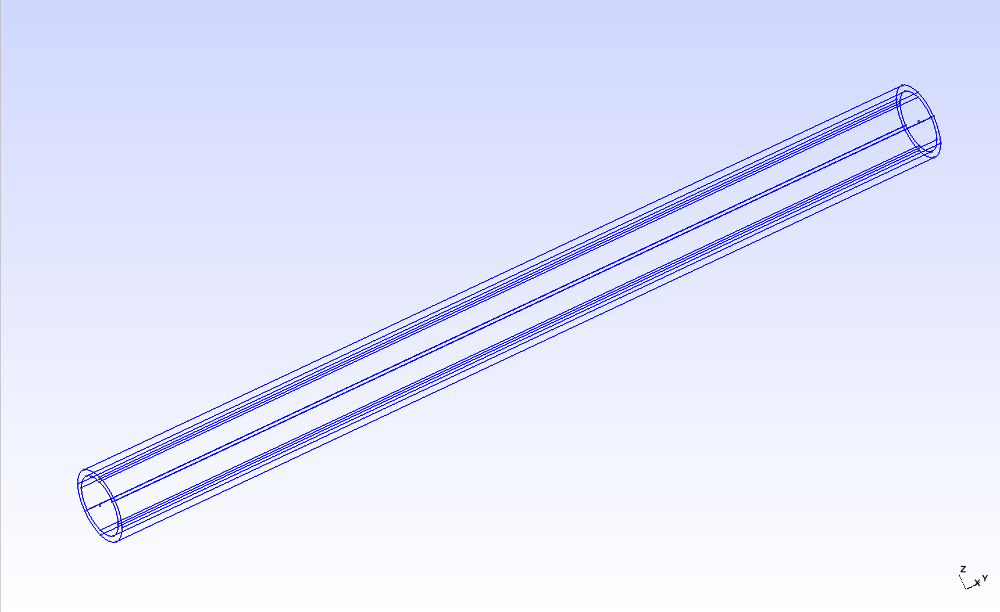
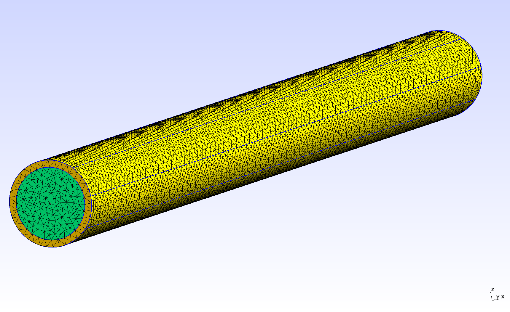
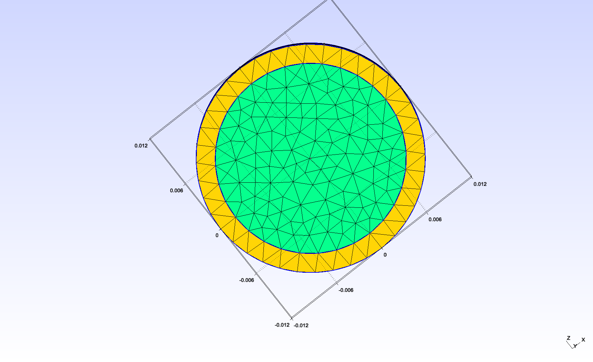
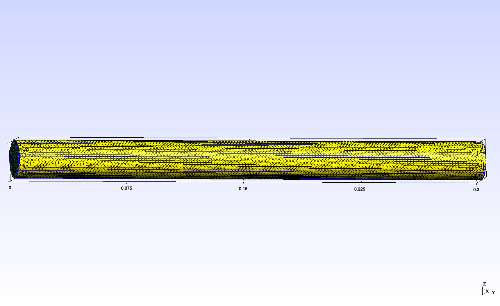

Fluid-structure interaction in a tube (non-symmetric external constraints)
This is an extension of the symmetric case. Now, we include a different constraint on the top part of the tube. Additionally, we use a time-dependent velocity profile for the inlet.
1. Introduction
Blood flow and blood vessel walls mechanically deform each other. We study this fluid-structure interaction in a simplified geometry : a tube. The tube is a simplified model for a part of either an artery or a vein. The inside of the tube represents blood, and its wall has a certain thickness to represent the vessel wall.
More specifically, we use this simple test to study the variability of the external constraints. This corresponds to the reaction of the surrounding tissues to the deformation of the blood vessel wall. These tissues may be softer or stiffer in certain parts of the body.
2. Geometry
The tube geometry is adapted from the Feel++ wavepressure3D FSI example. // TODO link It consists in a cylinder (the fluid domain) with an external layer (the solid domain). The surface between the two domains is the fluid-structure interface.
 
2.1. Dimensions
We changed the scale and the length/diam ratio as follows :
internal radius |
\(0.01mm\) |
external radius |
\(0.012mm\) |
length |
\(0.3mm\) |
This makes the tube reasonably close to the dorsal aorta (radius \(~0.01mm\)).
 
2.2. Physical measures and units
We use the following physical input expressed in \(mm, g, s\)
/ / I will include this a csv later
For the fluid:
Notation |
Quantity |
Value |
Units (mm, g, s) |
\(\boldsymbol{u}_f\) |
fluid velocity |
\( 1 \) |
\( mm \cdot s^{-1} \) |
\(\rho_f\) |
fluid density |
\( 1 \times 10^{-3} \) |
\( g \cdot mm^{-3}\) |
\(\mu_f\) |
dynamic viscosity |
\( 2.2 \times 10^{-3} \) |
\( g \cdot mm^{-1} \cdot s^{-1}\) |
And for the solid:
Notation |
Quantity |
Value |
Units (mm, g, s) |
\(E_s\) |
Young modulus |
\( 3 \times 10^3 \) |
\( g.mm^{-1}.s^{-2} \) |
\(\nu_s\) |
Poisson’s ratio |
\( 0.3 \) |
dimensionless |
\(\rho_s\) |
solid density |
\( 1.2 \times 10^{-3} \) |
\( g.mm^{-3} \) |
| The Poisson’s ratio used here is lower than it should be. We should try with 0.45 later. |
3. Dirichlet-Neumann FSI coupling
3.2. Boundary conditions
We use the following boundary conditions for the fluid:
-
Dirichlet condition at the inlet : a time-dependent function matching the cardiac cycle of the DMSO profile
-
Neumann condition at the outlet : free outlet
And for the solid:
-
Dirichlet condition at the "inlet ring" : the displacement is 0
-
Dirichlet condition at the "outlet ring" : the displacement is 0
-
Robin condition at the exterior surface to model the surrounding tissue constraint :
-
for z>0, the external tissues are stiff, the coefficient is high
-
for z<0, the external tissues are soft, the coefficient is low
-
We used the following coefficients :
Coefficient |
Value |
Stiff |
\( 10^6 \) |
Soft |
\( 10^2 \) |
We obtain a maximum displacement of \( ~8 \times 10^{-4} mm \) which is close to \( 5\% \) of the tube diameter, which is our goal. Further tuning is required though.
3.3. Solvers settings
3.3.1. Dirichlet-Neumann FSI coupling scheme
We start with a Dirichlet-Neumann semi-implicit scheme, using the following settings:
Name |
Value |
tolerance |
\( 1 \times 10^{-5} \) (default) |
maximum fixed-point iterations |
\( 1000 \) (default) |
Solver performance
Fluid preconditioner
We compare the convergence speed of two preconditioning strategies:
We limit the simulation to 10 time steps.
The comparison scripts used can be found here.
-
Performance table (8 cores on atlas node)
Name |
GASM (first) |
GAMG (second) |
Number of KSP iterations |
\( ~40 \) |
\( ~20 \) |
Assembling time (fluid) |
\( ~1.5 s \) |
\( ~1.4 s \) |
Solving time (fluid) |
\( ~12 s \) |
\( ~0.75 s \) |
One FSI iteration time |
\( ~160 s \) |
\( ~50 s \) |
Full simulation time |
\( ~32 min \) |
\( ~11 min \) |
Scaling
With GASM, the solver failed to converge with 24 cores. With GAMG, we successfully scaled to 24 cores.
-
GAMG scaling
Number of cores |
8 |
24 |
Number of KSP iterations |
\( ~20 \) |
\( ~22 \) |
Assembling time (fluid) |
\( ~1.4 s \) |
\( ~0.4 s \) |
Solving time (fluid) |
\( ~0.75 s \) |
\( ~0.40 s \) |
One FSI iteration time |
\( ~50 s \) |
\( ~20 s \) |
Full simulation time |
\( ~11 min \) |
\( ~4 min \) |
4. Robin-Robin FSI coupling scheme
4.2. Settings
To try to accelerate our simulation, we keep our GAMG preconditioning strategy and try to switch to a Robin-Robin semi-implicit coupling scheme.
We use the following settings:
Name |
Value |
\( \gamma \) |
\( 2500 \) (default) |
\( \gamma_0 \) |
\( 1 \) (default) |
\( \alpha \) |
\( 1 \) (default) |
maximum fixed-point iterations |
\( 3 \) |
This does not work correctly because the FSI convergence is too slow.